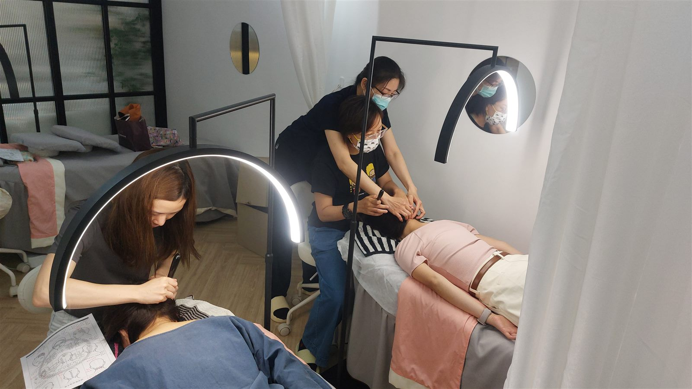

The Bojin Journal · Eyes
Tired, puffy eyes every morning? A gentle 5-minute reset for women over 40

If you wake up most mornings with puffy, tired-looking eyes, here's the short answer: fluid settles around your eyes overnight, the skin there is thinner and more delicate than anywhere else on your face, and after 40 it drains a little more slowly than it used to. None of that means you're doing anything wrong. It just means the eye area needs a gentler, smarter approach than the rest of your face, and most of us were simply never taught the method.
The good news is that you don't need new tools or a complicated routine. You can help your eyes look brighter and less puffy in about five minutes, using the featherlight touch of the Bojin Method. Let's walk through why morning puffiness happens, and then the exact steps.
Why do my eyes look so puffy and tired in the morning?
While you sleep, you're lying flat for hours, so fluid that normally drains away during the day tends to pool in the soft tissue around your eyes. That's why the puffiness is often worse first thing and eases as the morning goes on. A salty dinner, a glass of wine, allergies, or a short night can all make it more noticeable.
Screens play a part too. Long hours looking at a phone or laptop keep the tiny muscles around your eyes tense, and we tend to blink less, which can leave the whole area feeling tight and looking a little strained.
Then there's the skin itself. The skin around your eyes is some of the thinnest on your body, with very little cushioning underneath. After 40, natural changes mean this area holds fluid a bit more easily and bounces back a little slower. So puffy mornings aren't a sign that something is wrong with you. They're just how this delicate area behaves.
Why does the eye area need a gentler technique?
If you already love your gua sha, wonderful. Keep your stone. Gua sha is a beautiful tool, and it's everywhere in the US for good reason. Bojin comes from the same roots. Think of it as the sister technique, the one that focuses on method rather than the tool in your hand.
Here's the key: around the eyes, pressure is not the point. This skin is far too delicate for the firm strokes that feel great on your cheeks or jaw. When gua sha around the eyes doesn't give you the result you hoped for, it's almost never because the stone is wrong or because you did it wrong. It's usually because no one taught you how to read this area and how impossibly light your touch needs to be here. That's the method the Bojin approach adds on top of the tool you already have.
Around your eyes, less is more. The goal isn't to press harder or "break something up" — it's to gently encourage the fluid that pooled overnight to move along, with a touch so light it almost tickles. Keep your stone, and add the method.
The gentle 5-minute morning eye reset
You can do this with clean fingertips or the flat edge of your gua sha stone. Add a drop of your eye cream or facial oil first so everything glides. The whole thing should feel like a soft, calming ritual, never a workout. If you ever feel dragging or pulling on the skin, you're pressing too hard.
- Warm and settle. Rest your clean, cupped palms gently over your closed eyes for three slow breaths. This softens the area and helps you slow down before you begin.
- Read your face first. With one fingertip, lightly notice where you feel most puffy or tight this morning — under the eyes, the outer corners, the brow. There's no diagnosing here, just a moment to meet your face where it is today.
- Sweep under the eye. Using the lightest possible touch, glide from the inner corner outward along the under-eye, toward your temple. Featherlight, three or four times per side. You're inviting fluid to drain, not scrubbing.
- Ease the outer corners and temples. Make small, soft outward strokes at the outer corners and gently up toward the hairline. This is where a lot of morning tension likes to sit.
- Finish down the neck. Sweep softly from just below your ears down the sides of your neck toward your collarbones. This gives everything you just moved a clear path to drain away.
What can I honestly expect?
Done gently and regularly, this reset can help your eyes look less puffy, a little brighter, and more awake, and it tends to help your eye cream absorb better too. Many women find the biggest win is simply how relaxed and cared-for it feels — a quiet few minutes that set a calmer tone for the day and a small boost of confidence when you look in the mirror.
Be kind about the results. This is gentle circulation support and a soothing ritual, not a fix for tiredness, and it works best alongside good sleep, water, and a little patience. Puffiness that's sudden, one-sided, or comes with pain or vision changes is worth mentioning to your doctor rather than massaging.
Quick answers
Why are my eyes puffy every single morning?
Lying flat overnight lets fluid pool in the delicate tissue around your eyes, so puffiness is often worst first thing and eases through the morning. Salty food, alcohol, allergies, short sleep, and the naturally thinner skin around the eyes after 40 can all make it more noticeable. It's normal, not a sign you're doing anything wrong.
Can I use my gua sha stone for this eye reset?
Yes. Keep your stone and use its flat edge with a very light touch, or just use clean fingertips. Around the eyes the method matters more than the tool: pressure should be featherlight, and a drop of eye cream or oil helps everything glide without tugging the delicate skin.
How is the Bojin Method different from gua sha?
They come from the same roots. Gua sha is a tool many women already love, and the Bojin Method is the sister technique that focuses on how you move — especially the impossibly light touch the eye area needs. It's not about replacing your stone, just adding the method most of us were never taught.
Will this get rid of my under-eye bags or wrinkles?
No, and it's honest to say so. This is a gentle ritual that supports circulation and can help your eyes look less puffy, brighter, and more awake, while helping eye cream absorb. It isn't a treatment and won't remove lines or cure tiredness. Sudden, one-sided, or painful puffiness is worth checking with your doctor.
Want the full eye-care method?
Get the free Bojin eye guide and learn the featherlight technique step by step, so your morning reset feels easy and your eyes look more awake. It's the method to add to the tool you already have.
Get the free guideYu-Ting Lan is an international bojin instructor and the founder of Héhé Studio. She has taught her bojin method to close to a thousand students — from complete beginners to grandmothers — across Taiwan, Hong Kong, and Malaysia.